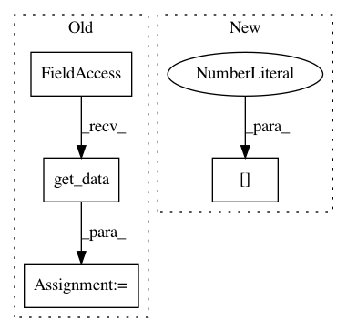

8150e189ca71e482c4fdadd4345e3c4b4b5a0a68,enthought/chaco/contour_line_plot.py,ContourLinePlot,_update_contours,#ContourLinePlot#,107
Before Change
self.index._ydata.get_data()) //[:-1])
c = Cntr(xg, yg, self.value.raw_value)
else:
yg, xg = meshgrid(self.index._ydata.get_data(), //[:-1],
self.index._xdata.get_data()) //[:-1])
c = Cntr(xg, yg, self.value.raw_value.T)
self._cached_contours = {}
for level in self._levels:
After Change
xdata = self.index._xdata.get_data()
ydata = self.index._ydata.get_data()
xs = linspace(xdata[0], xdata[-1], len(xdata)-1)
ys = linspace(ydata[0], ydata[-1], len(ydata)-1)
xg, yg = meshgrid(xs, ys)
if self.orientation == "h":
c = Cntr(xg, yg, self.value.raw_value)
In pattern: SUPERPATTERN
Frequency: 4
Non-data size: 4
Instances
Project Name: enthought/chaco
Commit Name: 8150e189ca71e482c4fdadd4345e3c4b4b5a0a68
Time: 2010-04-15
Author: pwang@651a555e-23ca-0310-84fe-ca9f7c59d2ea
File Name: enthought/chaco/contour_line_plot.py
Class Name: ContourLinePlot
Method Name: _update_contours
Project Name: nilearn/nilearn
Commit Name: f5d882c106aa2202d03ead930f7af2ee5d612b4c
Time: 2019-04-18
Author: jerome-alexis.chevalier@inria.fr
File Name: nilearn/regions/rena_clustering.py
Class Name:
Method Name: weighted_connectivity_graph
Project Name: enthought/chaco
Commit Name: 8150e189ca71e482c4fdadd4345e3c4b4b5a0a68
Time: 2010-04-15
Author: pwang@651a555e-23ca-0310-84fe-ca9f7c59d2ea
File Name: enthought/chaco/contour_poly_plot.py
Class Name: ContourPolyPlot
Method Name: _update_polys
Project Name: nipy/dipy
Commit Name: 6636b1363d90aafa2acd9f782be9815f8b9dac01
Time: 2020-01-03
Author: skab12@gmail.com
File Name: doc/examples/streamline_registration.py
Class Name:
Method Name: